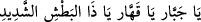
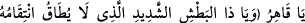
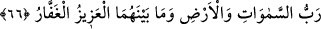

fırtınalarıyla kırar. Vehmî şirk (ortak) ve önemsiz çokluk âlemini -ki gerçekte varlığı
yoktur- ârif kişinin gözünden siler.
O’nun gayreti (kıskanması) cihanda gayrıyı bırakmadı,
Gazabı da onun bunun ismini ortadan kaldırdı.
Zannî karanlık tümüyle kaybolur,
Vâhid ve Kahhâr olanın nurlarının yanında.
Fakîr (Bursevî) der ki: Şeyhim ve senedim (Osman Fazlî-i İlâhî) hazretlerinin
meclisindeki birinden şöyle işittim: “Bu âyet-i kerimede son derece güzel bir tertip
mevcuddur. Çünkü zât-ı ahadiyyet tek’liği ile kesreti; kahrı ile de bu kesretin izlerini
bertaraf eder, böylece hepsi yok olup gider ve O’ndan başka hiçbir şey bâkî olmaz.
Bir âlim de şöyle der: “Kahhâr”, herşeyin gerek zâhiri gerekse bâtını üzerinde tam bir
galibiyet ve üstünlük sâhibi kişi demektir. Allah’ın kulları açısından ne kadar kahredici
olduğunu bilenler, O’nun muradı karşısında kendi muradlarını unutur giderler; O’ndan
başka herhangi bir kimseye veya şeye değil, sadece O’na âid ve O’nunla birlikte
olurlar.
Bu ismin temel vasfı, dünya sevgisini ve Allah dışındaki herşeyin azametini gönülden
atıp gidermektir. “el-Kahhâr” adını çokça zikredenlerde düşmanlarına karşı “kahr”
özellikleri zuhûr etmeğe başlar. Kahhâr ism-i şerifi, zâlimleri bu sıfat sâyesinde helâk
etmek amacıyla gecenin ortasında ve güneşin doğuşu esnâsında zikredilir. Şöyle ki önce
bir kez (
) yâni, “Ey Cebbâr! Ey kahhâr! Ey Şiddetli yakalayış
sâhibi!” denir, sonra da ‘bana haksızlık edip musallat olan falancadan hakkımı al! diye
duâ edilir.
el-Erba‘în el-İdrîsiyye’de şöyle der: Karmaşık hâle gelip iyice arapsaçına dönmüş
bir meseleyi halletmek için bir çini üzerine (
)
yâni “Ey Kahredici! Kendisinden intikam alınması mümkün olmayan müthiş yakalayış
gücünün sâhibi!” ibâresi yazılır. Hasımlara galip gelmek ve düşmanı yenmek amacıyla
da yine aynı ibâre savaş giysisi üzerine yazılır.
66. Göklerin, yerin ve ikisi arasında bulunanların Rabbi (olan Allah) üstündür,
çok bağışlayıcıdır.
O, “göklerin, yerin ve ikisi arasında bulunanların” yâni mahlûkâtın “rabbi (olan
Allah)…” O (c.c.), bütün âlemlerin sâhibidir. Öyle ise böyle birinin bir ortağı
olabileceğini nasıl vehmedebiliyor sunuz?!
O (c.c.) hiçbir işinde mağlup değildir, suçlulardan intikam alma gücüne sâhiptir ve